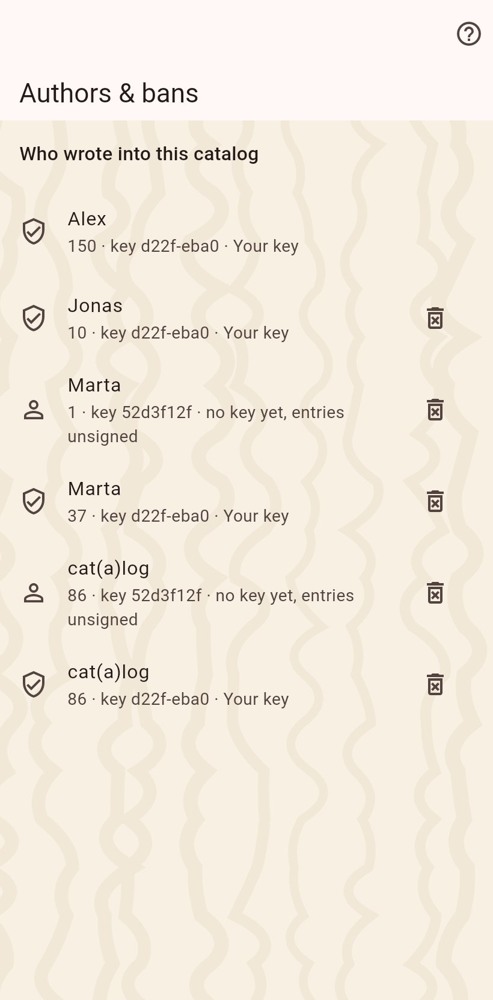

The people whose entries reached this catalog, with what they wrote. And the three ways to keep something to yourself: private, hidden, banned.

Every entry carries its author and the key code of the device. The moderation page lists them; delete a person's data on this device and ban their device from sending more. A ban is local and reversible; a hard delete removes the entries and photos for good, the one exception to a history that is otherwise never erased.
A value marked private in its editor stays on this device unless a share has the private switch on. Partners see a lock on the empty row. A cat's existence is never private, only a value.
A cat, a home or a field hidden on this device is still received, stored and synced onward; it is only not shown. "Show hidden" in the home's menu reveals it, and a hidden thing's menu unhides it.